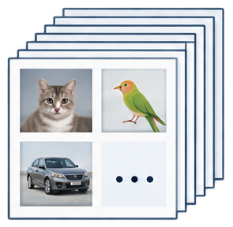
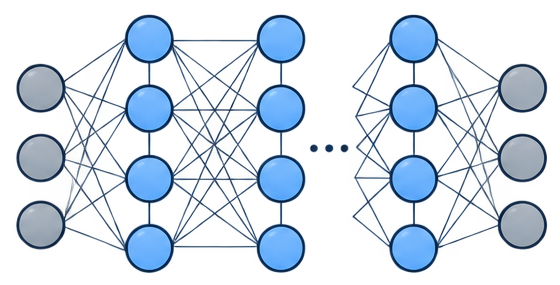
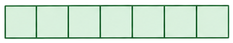
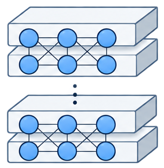
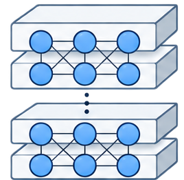

训练样本页束
sample-pages
下载独立 SVG 素材保留原图像素；每项可分别导入、移动、缩放、替换。文字、箭头和状态在图中另加。底部截断的模型仅归档参考，正式绘图复用完整层叠模型。

sample-pages
下载独立 SVG 素材
neural-network
下载独立 SVG 素材
token-strip
下载独立 SVG 素材
layered-model
下载独立 SVG 素材agent-role
下载独立 SVG 素材
agent-model
下载独立 SVG 素材terminal-web-tool
下载独立 SVG 素材result-document
下载独立 SVG 素材